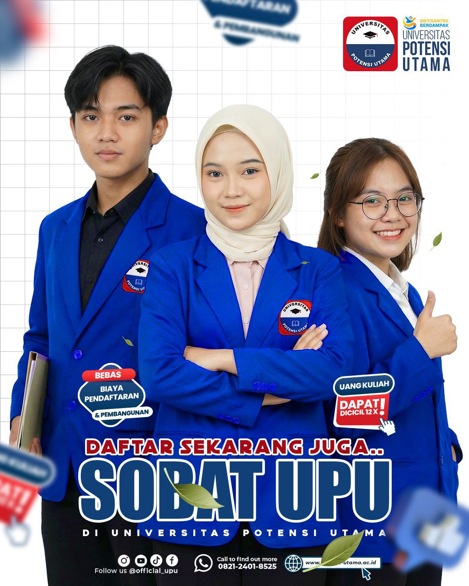

UNIVERSITAS
POTENSI UTAMA
Membangun Generasi Unggul, Inovatif,
dan Siap Bersaing di Era Digital.
6
Fakultas
14
Program Studi
27605
Mahasiswa
385
Tenaga Pengajar
Sejak 1994.
Universitas Potensi Utama merupakan salah satu Perguruan Tinggi Swasta (PTS) di bawah naungan Yayasan Potensi Utama Medan. Universitas Potensi Utama bermula dari Kursus Komputer dan Bahasa Inggris pada tahun 1994 dengan nama PLSM (Pendidikan Luar Sekolah Masyarakat) Potensi Utama.
Pada tahun 2003, berdasarkan izin dari Direktorat Jenderal Pendidikan Tinggi (DIKTI), PLSM Potensi Utama berhasil meningkatkan statusnya menjadi STMIK (Sekolah Tinggi Manajemen Informatika dan Komputer) Potensi Utama, hingga kini bertransformasi menjadi Universitas yang unggul dalam industri kreatif dan teknologi digital.
Hj. Nuriandy, BA
Founder
Jelajahi Fakultas Universitas Potensi Utama
Universitas Potensi Utama memiliki berbagai fakultas yang siap mendukung pengembangan ilmu pengetahuan, teknologi, seni, bisnis, kesehatan, dan pendidikan.
Fakultas Ilmu Komputer
Menghasilkan lulusan yang unggul dalam teknologi informasi, kecerdasan buatan, dan pengembangan perangkat lunak.
Selengkapnya →Fakultas Ekonomi & Bisnis
Mencetak lulusan yang profesional dalam bidang bisnis, manajemen, kewirausahaan, dan ekonomi digital.
Selengkapnya →Fakultas Hukum
Mengembangkan lulusan yang berintegritas, berwawasan hukum, dan siap menghadapi tantangan global.
Selengkapnya →Fakultas Seni & Desain
Mendorong kreativitas mahasiswa dalam bidang seni, desain, multimedia, dan industri kreatif.
Selengkapnya →Fakultas Kesehatan
Menyiapkan tenaga kesehatan yang profesional, kompeten, dan berorientasi pada pelayanan masyarakat.
Selengkapnya →Fakultas Keguruan & Ilmu Pendidikan
Mencetak pendidik yang inovatif, profesional, dan mampu menjawab tantangan dunia pendidikan.
Selengkapnya →BROSUR Penerimaan Mahasiswa Baru
Dapatkan informasi lengkap mengenai jalur pendaftaran, biaya kuliah, program studi, serta berbagai beasiswa Universitas Potensi Utama.


FASILITAS KAMPUS
Universitas Potensi Utama menyediakan berbagai fasilitas modern untuk mendukung proses belajar, penelitian, serta pengembangan potensi mahasiswa.

Laboratorium Komputer

Perpustakaan

Aula Gedung B

Area Mural

Lab Fisika